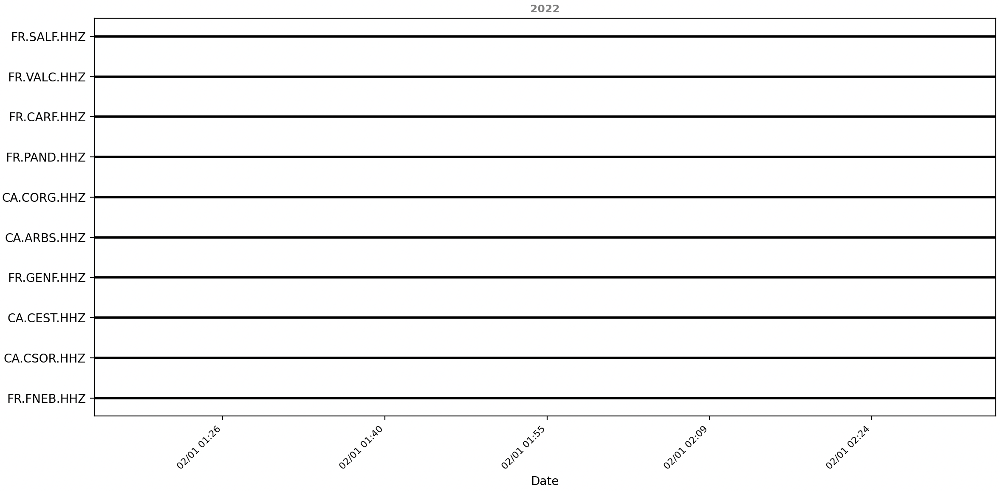
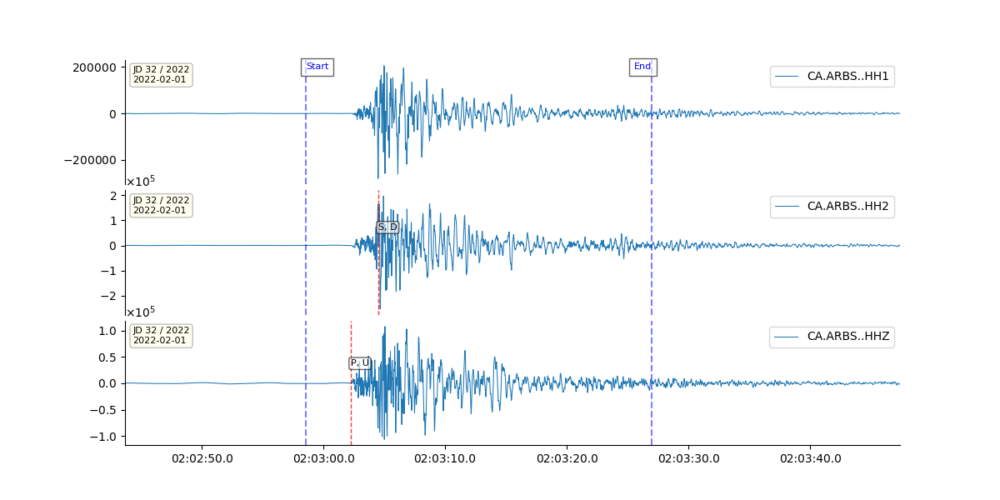

Basic Signal Processing Tutorial 1
In this tutorial, we will learn how to work with the commands: make_config, explore, info and quick to process your seismic waveforms.
In this tutorial we will follow this structure:
- Seismic files: tutorial1/data
- Metadata: tutorial1/metadata
- Config Files: tutorial1/configs
- Folder for the tutorial output: tutorial1/output, this will be created by surfquake.
--tutorial1
--data
--CA.ARBS..HH1.D.2022.32
--CA.ARBS..HH2.D.2022.32
--CA.ARBS..HHZ.D.2022.32
......
--metadata
--inv_all.xml
--configs
--typical_config.yaml
--plotting_config.yaml
For this tutorial you need to download the seismic data here. Optionally, download the corresponding metadata.
All the commands of this tutorial are run from the folder that contains tutorial1.
Please, first open a terminal, activate your environment and type the following command to overview all surfquake capabilities:
Generate Config Files
When working with seismic waveforms, it is useful to describe the signal processing workflow and the plotting options in configuration files. Let's prepare the necessary files.
surfquake make_config -h
surfquake make_config -c typical_config -o "./tutorial1/configs"
surfquake make_config -c plotting_config -o "./tutorial1/configs"
The plotting configuration is commented to explain the functionality. The parametrization for signal processing can be found here for traces and here for streams.
Explore your data
Sometimes we have really big datasets. Before processing, it is good to have a first view of the data coverage, including gaps.
In this example we use the wildcard *, which means all files. No worries, only seismic files will be read.
Other useful wildcards are *Z* (all vertical components) or *VALC* (only station VALC). Keep in mind that wildcards work on the file names, not on the file headers.

Look at the files header
Now let's look at the header of your files. It tells you a lot about what is inside them, such as the sampling rate, the number of points or the start time.
Please review the following documentation:
[INFO] 30 files retained after filtering.
File | CA.ARBS..HH1.D.2022.32 | CA.ARBS..HH2.D.2022.32 | CA.ARBS..HHZ.D.2022.32
Network | CA | CA | CA
Station | ARBS | ARBS | ARBS
Location | | |
Channel | HH1 | HH2 | HHZ
Start Time | 2022-02-01T01:15:00.6200 | 2022-02-01T01:15:00.6200 | 2022-02-01T01:15:00.6200
End Time | 2022-02-01T02:35:00.2100 | 2022-02-01T02:35:00.2100 | 2022-02-01T02:35:00.2100
Sampling Rate (Hz) | 100.0 | 100.0 | 100.0
Delta (s) | 0.01 | 0.01 | 0.01
Npts | 479960 | 479960 | 479960
Picks | None | None | None
References | None | None | None
The option -c sets how many traces (columns) are shown side by side.
Process your waveforms
Finally, it is time to play with processing. The file typical_config.yaml removes the mean, applies a taper and filters the traces between 0.5 and 8.5 Hz with a zero-phase Butterworth bandpass filter:
Analysis:
process_1:
name: 'rmean'
method: 'linear'
process_2:
name: 'taper'
method: 'cosine'
max_percentage: 0.05
process_3:
name: 'filter'
type: 'bandpass'
fmin: 0.5
fmax: 8.5
corners: 4
zerophase: True
Please review the following documentation:
surfquake quick -h
surfquake quick -w "./tutorial1/data/*" -c "./tutorial1/configs/typical_config.yaml" --plot_config "./tutorial1/configs/plotting_config.yaml"

Navigate and process your data interactively. The keyboard shortcuts are printed in the terminal:
=======================================================
Plot Interaction Help
=======================================================
KEY | ACTION
--- | ------
n | Next page
b | Previous page
w | Add reference time
p | Remove last reference
c | Clear all picks
e | Manual pick (interactive input)
1–6 | Quick picks (P/S + polarity)
d / Del | Delete pick under cursor
v | Open command prompt
u | Set start time at cursor
i | Set end time at cursor
Right-click drag | Select time window
Double left-click | Add pick
ESC / Enter | Exit current mode
=======================================================
Your picks are saved in the file set by pick_output_file in plotting_config.yaml (default ./picks.csv).
Automatic processing
Sometimes we do not want to plot the seismograms, only to process them and write the output files to disk. This is done by adding the option -a (automatic mode) and an output folder with -o:
surfquake quick -w "./tutorial1/data/*" -c "./tutorial1/configs/typical_config.yaml" -o "./tutorial1/output" -a
The processed traces are saved in H5 format. Picks, reference times and geodesic information travel with the traces in the header.
If you also want to save the figures automatically, edit these fields in ./tutorial1/configs/plotting_config.yaml:
and run the command again, now passing the plotting configuration:
surfquake quick -w "./tutorial1/data/*" -c "./tutorial1/configs/typical_config.yaml" --plot_config "./tutorial1/configs/plotting_config.yaml" -o "./tutorial1/output" -a
With show_plot: false nothing is displayed on screen: all pages are written to plot_output_path and surfquake does not ask any question. This is the mode to automate your plots.
| show_plot | plot_output_path | Result |
|---|---|---|
| true | null | displayed, not saved |
| true | ./figures | displayed and saved |
| false | ./figures | not displayed, saved (batch) |
| false | null | nothing shown or saved |
Note
In automatic mode (-a) the figures are only saved when show_plot: false and plot_output_path is set.
Using Bash script
Now, how can you chain several surfquake commands? The answer is a bash script file.
Please, create a file named run_commands.sh and write the following commands in it:
#!/bin/bash
# Activate your conda environment
eval "$(conda shell.bash hook)"
conda activate surfquake # Replace with the name of your environment
surfquake explore -w './tutorial1/data/*'
surfquake quick -w "./tutorial1/data/*" -c "./tutorial1/configs/typical_config.yaml" -o "./tutorial1/output" -a
Ok, let's run the bash script. Open a terminal in your working directory, where the run_commands.sh file is, and type:
Tip
Run the script with ./run_commands.sh or bash run_commands.sh. On many Linux systems sh is not bash, and the activation of the environment fails.
Interactive Processing
Open again the plot with the quick command (interactive mode, without -a):
surfquake quick -w "./tutorial1/data/*" -c "./tutorial1/configs/typical_config.yaml" --plot_config "./tutorial1/configs/plotting_config.yaml"
- Open an interactive prompt pressing
v. The directions for interacting with the traces are printed in the terminal. - In the new prompt type
helpto open the interactive signal processing menu. To get details and examples of one command, type for examplehelp filter.
This is an excerpt of the menu (type help to see the full and updated list):
▸ Navigation
n Next trace page
b Previous trace page
p Return to picking mode
back2future / b2f Restore original waveforms (undo all processing)
exit Close interactive session
▸ Signal Processing
algebra Apply a Math expression on traces
rmean Remove mean on traces
taper Apply taper window on traces
normalize / norm Normalize traces
remove_spikes Remove spikes from traces
filter Apply signal filtering
cut Trim traces using picks or UTC times
concat Merge trace segments
rotate Rotate seismic components
shift Align traces by phase arrivals
write Export traces to HDF5
▸ Spectral Analysis
spectrum / sp Plot amplitude spectrum
spectrogram / spec Plot spectrogram
cwt Continuous wavelet transform
save_tf Save Time-Frequency Analysis
▸ Array Processing
beam FK beamforming analysis
smap Slowness map estimation
stack Trace stacking
xcorr Cross-correlate traces
Let's try a few commands. First, filter the displayed traces between 1 and 5 Hz:
The commands that modify the traces (filter, rmean, taper, back2future...) redraw the figure and take you back to picking mode. Look at the result and press v again to reopen the prompt.
Now restore the original waveforms, undoing all the processing:
Press v again. To export the traces you have processed interactively:
To go back to picking mode without modifying the traces type p, and to close the session type exit.